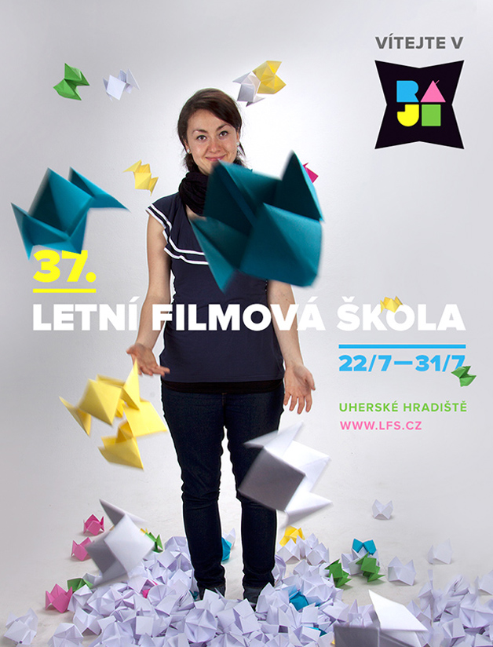
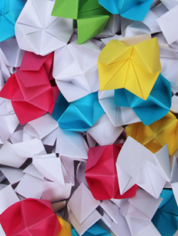
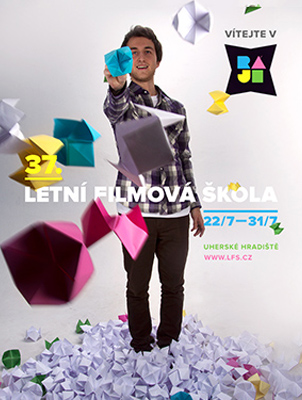
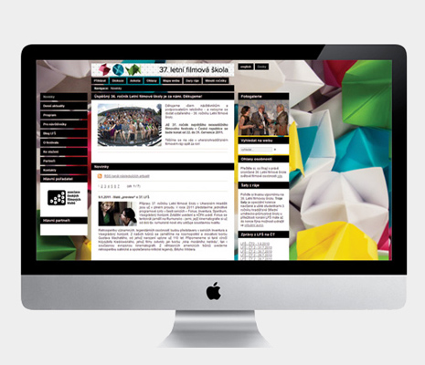

Letní filmová škola

Grafický design
Vítejte ve filmovém ráji
Inspirováno dětskou papírovou skládankou nebe-peklo-ráj, trefně představující hravost a barevnost celého konceptu, a stejně tak vhodně podporující heslo festivalu Vítejte v ráji. Zpracování cíleně vybočuje od předešlých ročníků — pracuje s čistou fotografií a emocemi v obličeji. Námět spolehlivě zasahuje cílovou skupinu návštěvníků — mladé lidi, kteří tuto skládanku z dětství dobře znají. V případě, že neví, na který film právě jít, mohou se zeptat skládanky — na skrytých polích obsahuje názvy jednotlivých promítacích míst. Prázdné skládanky si návštěvníci mohou sami vypisovat a tím se navzájem bavit.